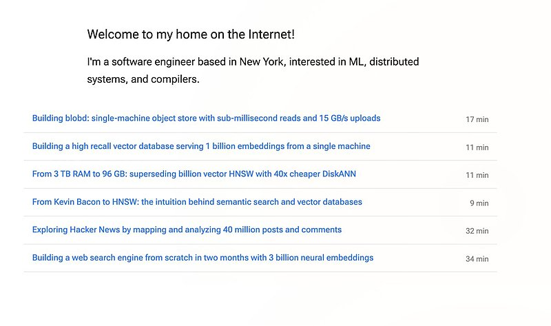
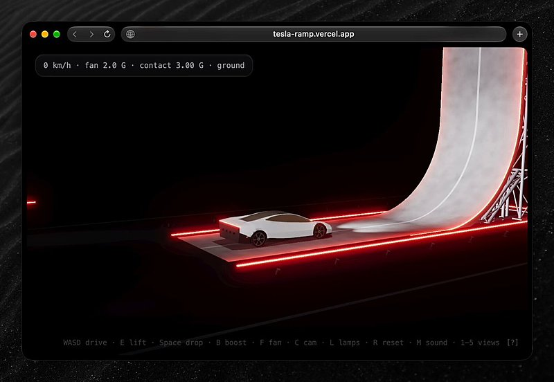

AI 日报 · 10月20日
代码生成提速，工程系统要跟上
OpenAI 披露低资源编程语言的新评测，Anthropic 解释为何为高并发代码变更建设 Scion。Builder 则从数据工程、事故恢复和 Agent 协作谈起：写代码更快之后，测试、数据、版本控制和权限仍决定能否可靠交付。
代码评测
版本控制
数据工程
安全恢复
5
Builder 动态
4
今日上榜项目
3
原始文章
1
公开视频
今日要点
低资源语言的代码评测进步
OpenAI 在 20 种语言的 MultiLangBench 上报告 GPT‑6 Astra 平均测试通过率 87.4%，GPT‑5.6 Sol 为 26.8%。这是厂商定义的评测，不能直接当作生产迁移成功率；其 COBOL 迁移测试另要求可观察输出逐字节一致。
代码合并规模倒逼工具变化
Anthropic 称内部单体仓库日合并变更从 5 月约 2,500 次升至 9 月逾 30,000 次，随后用五个月迁移至自建 Scion。作者强调这是其特殊负载，不能推断普通团队都需要替换 Git。
深度对话
Misha Laskin：开放权重模型怎样进入企业
No Priors 于 10 月 9 日访谈 Reflection AI 联合创始人 Misha Laskin。节目讨论 Beam、开放权重的安全取舍和企业部署路径；以下是受访者观点，尚非市场验证结果。
先搭系统，再谈微调
Laskin 预测企业会先围绕开放模型定制 Agent 运行系统和业务流程，积累能力后才考虑微调；这是其商业判断。
用任务评测连接数据与价值
他认为企业若能为具体任务建立评测，就能据此生成近似数据并检验泛化；例子包括金融合规和网络防御。
开放与安全仍需共同验证
他主张开放权重有助于更多人发现问题，同时承认强模型访问存在取舍。节目没有证明开放会自动带来安全。
资讯精选
官方文章与来源核对
OpenAI｜低资源语言评测
新评测分别考察从零构建 SQLite 兼容引擎与保持 COBOL 程序行为的迁移；OpenAI 公开了 MultiLangBench 测试套件，实际迁移仍需专家复核。
OpenAI｜Daybreak 防御访问
Daybreak 页面介绍面向核准防御人员的访问与额度申请；Thibault 的原帖称受 OpenCode 事件影响且也是 OpenAI API 客户的用户已恢复使用并获相关额度退款，适用范围以其原帖为准。
Builder 动态
写得更快之后，瓶颈在哪里
Swyx｜数据工程比简单 RAG 更稀缺
Swyx 对比只做 RAG 接入与能建设数据密集型应用的人才，并分享一页涉及对象存储、向量检索与搜索引擎的工程文章目录；这是他的招聘观察，不能代表整体就业市场。

Thibault Sottiaux｜说明 OpenCode 事故后的恢复
OpenAI 团队成员称已协助同时使用 OpenAI API 的 OpenCode 用户恢复使用，并退还攻击中消耗的相关额度；还提示合格防御工作者可申请 Daybreak Blue。没有公布全部受影响用户范围。
Guillermo Rauch｜展示模型改进小游戏
Vercel CEO 称通过 AI Gateway 使用 DeepSeek V4.1 Flash 为汽车斜坡小游戏加上声音、碰撞和镜头跟随等功能；约 0.30 美元是他的单次体验成本，并非通用报价。

Aaron Levie｜Agent 群协作的规模判断
Box CEO 认为研究、数据处理、测试等工作可能借多 Agent 并行增加投入，但同时需要规划、执行、审查与协调。他对经济影响的判断属于前瞻观点。
Thariq｜把创作角色变成游戏玩法
Thariq 正探索开放源码游戏，让玩家自行编写角色并参与平衡；原帖展示早期原型，没有宣布完成品或上线日期。
GitHub Trending
今日榜单的四个项目


按 10 月 20 日 GitHub Trending 实时榜单筛选，避开昨日重点；星标、分叉与语言来自当次 GitHub API 快照，随后会变化。功能描述按仓库自述整理。
今日思考
模型能写更多语言，不代表迁移可以跳过行为测试；Agent 能并行，不代表版本控制、数据质量和审查可自动扩容。今天的原始资料分别指向同一件事：产出速度提高时，交付系统需要更明确的验证入口。今日一问：你的下一次 Agent 改动会经过哪些可重复的测试、合并与权限检查？
参考来源